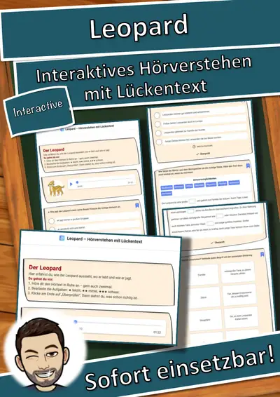

02-10 Internationaler Tag des Arabischen Leoparden
Dieses Lehrmaterial zielt darauf ab, das Lese- und Textverständnis der Schüler*innen zu fördern und ihr Bewusstsein für den Schutz bedrohter Tierarten zu schärfen.
Illustrationen: Bildliche Darstellung zur visuellen Unterstützung des Themas.
Antwortschlüssel: Lösungen zur Selbstüberprüfung und Lehreranleitung.
Unterrichtsaktivitäten
1. Klassendiskussion
Ziel: Förderung der Kommunikation und des kritischen Denkens
Beginne mit der gemeinsamen Lektüre des Textes über den arabischen Leoparden.
Ermutige die Schüler*innen, ihre Gedanken und Gefühle über den Schutz bedrohter Arten zu äußern.
Stelle offene Fragen, um die Diskussion zu lenken, z.B.: "Warum ist es wichtig, Tiere zu schützen?"
Notiere die Hauptideen an der Tafel, um die Diskussion zu strukturieren.
2. Jigsaw-Gruppenarbeit
Ziel: Kooperatives Lernen und Vertiefung des Verständnisses
Teile die Klasse in kleine Gruppen auf.
Jede Gruppe bearbeitet einen Aspekt des Themas (z.B. Lebensraum, Bedrohungen, Schutzmaßnahmen).
Nach der Arbeitsphase stellen sich die Gruppen gegenseitig ihre Ergebnisse vor.
Diskutiere gemeinsam, wie alle Aspekte zusammenhängen.
3. Integration in Vorwissen
Ziel: Verknüpfung von neuem und bekanntem Wissen
Biete ein Brainstorming an: Was wissen die Schüler*innen bereits über Leoparden?
Nehme neue Erkenntnisse aus dem Text hinzu.
Erstelle gemeinsam eine Mindmap an der Tafel, die altes und neues Wissen zusammenführt.
4. Kreatives Erinnern
Ziel: Unterstützung des Gedächtnisses und Förderung der Kreativität
Fordere die Schüler*innen auf, eine kurze Geschichte, ein Gedicht oder ein Bild über einen Tag im Leben eines arabischen Leoparden zu erstellen.
Nutze dabei Informationen und Inspiration aus dem Text.
Präsentiere und besprich die kreativen Werke in der Klasse.
5. Reflexion und Metakognition
Ziel: Förderung des bewussten Nachdenkens über Lernprozesse
Lass die Schüler*innen über ihren Lernprozess nachdenken: Was fiel leicht? Was war schwierig?
Stelle Reflexionsfragen, z.B.: "Wie hast du das Textverständnis verbessert?"
Lass die Schüler*innen ihre Erkenntnisse in einem Lerntagebuch notieren.
Ähnliche Materialien

Leopard Lückentext mit Wortspeicher Hörverstehen und Suchsel

Leopard – Hörverstehen mit Lückentext (interaktiv)

Arabischer Frühling Lückentext mit Wortspeicher Hörverstehen und Suchsel

Arabische Sprache Lückentext mit Wortspeicher Hörverstehen und Suchsel

03-05 Internationaler Tag der Abrüstung und der Förderung des Bewusstseins für Nichtverbreitung

03-08 Internationaler Tag der Frau

Vereinigte Arabische Emirate Lückentext mit Wortspeicher Hörverstehen und Suchsel